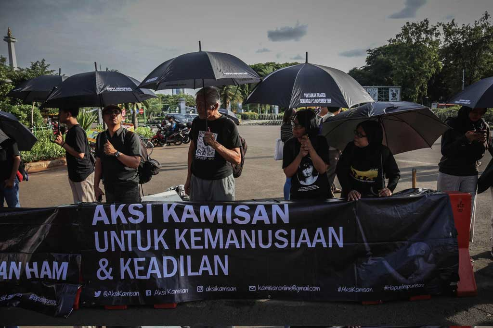
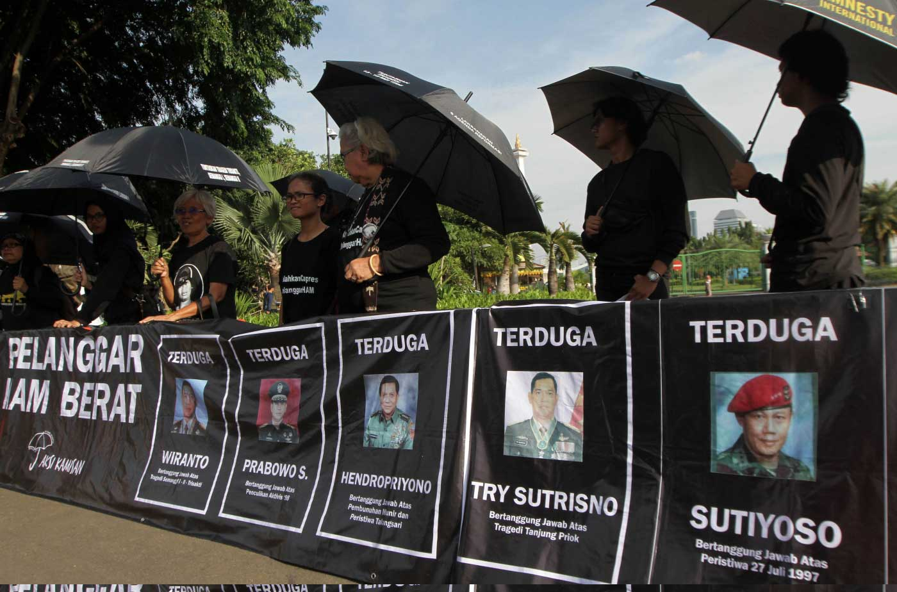
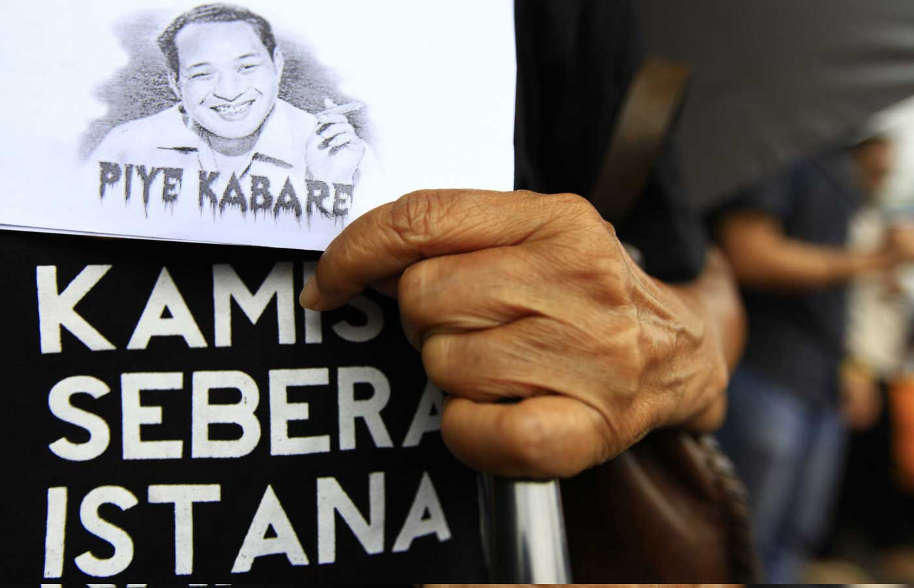
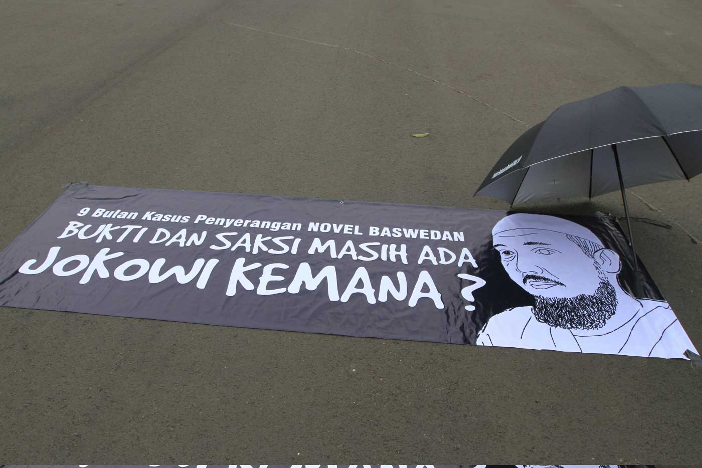
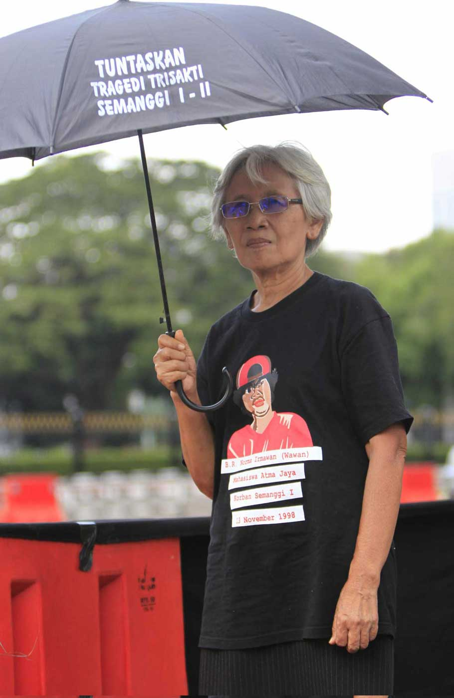
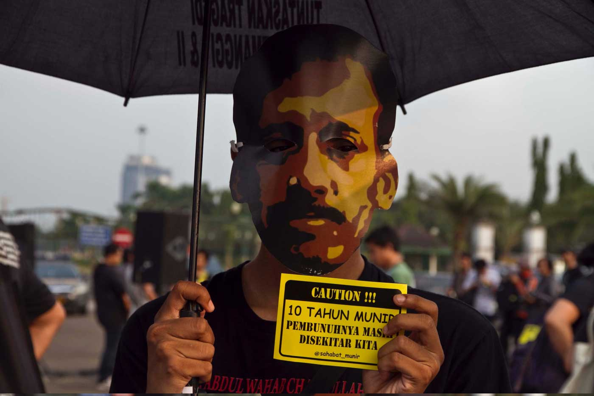
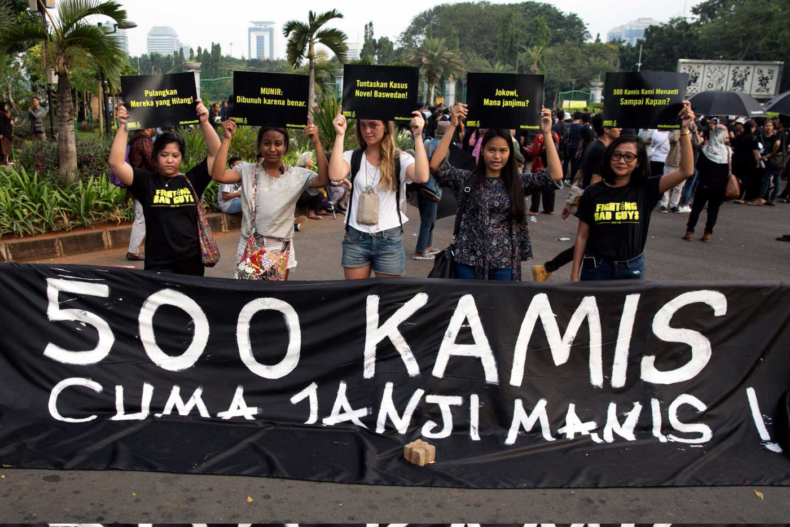

Sudah 13 tahun, Sumarsih dan korban pelanggaran Hak Asasi Manusia lainnya menggelar aksi di depan Istana Negara saban Kamis. Lima ratusan surat terbuka sudah mereka kirim kepada Presiden keenam Susilo Bambang Yudhoyono dan Presiden Joko Widodo, meminta agar para pelaku kejahatan kemanusiaan diadili. Tapi tak pernah ada tanggapan serius dari Istana.
RATUSAN orang berbaju serba hitam dan membawa payung berkelir senada berbaris di Taman Padang depan Istana Negara pada Kamis, 16 Januari 2020. Beberapa di antara mereka membawa poster yang isinya menuntut Presiden Joko Widodo atau Jokowi menuntaskan pelanggaran Hak Asasi Manusia (HAM) masa lalu.
Sore itu, memperingati 13 tahun Aksi Kamisan, para peserta berencana mengitari Istana Negara sembari menabur bunga di enam pintu Istana dan meniup peluit. Sayangnya, rencana ini kandas. “Polisi tidak mengizinkan kami mendekat ke istana,” kata salah satu penggagas aksi, Maria Catarina Sumarsih, ketika ditemui di lokasi.
Bernegosiasi alot dengan kepolisian, peserta aksi akhirnya diizinkan menabur bunga dan berjalan kaki sampai ke pintu gerbang Sekretariat Negara di Jalan Majapahit. Setelah itu mereka harus putar balik di persimpangan Harmoni dan kembali ke Taman Padang.
"Saya berharap ke Pak Jokowi kalau memang memiliki hati yang tulus, tidak hanya Pak Jokowi saja, tapi semua penguasa berkewajiban untuk menyelesaikan kasus pelanggaran HAM berat," kata Sumarsih, ibunda dari Bernardinus Realino Norma Irmawan, biasa disapa Wawan, salah satu korban Tragedi Semanggi 1998. Sore itu dia juga menyampaikan harapannya agar Presiden Joko Widodo segera membentuk pengadilan ad hoc untuk mengadili para pelanggar hak asasi manusia.
Aksi hari itu kembali mendesak pemerintah menindaklanjuti hasil penyelidikan Komisi Nasional Hak Asasi Manusia (Komnas HAM) terkait pelanggaran HAM masa lalu. Antara lain, yang selalu dipersoalkan kasus: Semanggi I, Semanggi II, Trisakti, Tragedi 13-15 Mei 1998, Talangsari, Tanjung Priok, Tragedi 1965, hingga pembunuhan Munir. Tapi tidak ada tanggapan serius dari pemerintah. Sebaliknya, kata dia, “Acara kamisan semakin hari semakin dipersulit, gerak kami dibatasi.”
Sudah 13 tahun aksi kamisan berlangsung. Aksi ini menyebar ke seluruh Indonesia dan menjadi ruang publik bagi anak muda untuk menyuarakan hak asasi manusia.
Digagas pertama kali pada Januari 2007, pada 16 Januari itu Aksi Kamisan sudah berjalan 618 kali. Sumarsih pertama kali melontar ide untuk melakukan aksi rutin tersebut dalam sebuah rapat Jaringan Solidaritas Korban untuk Keadilan (JSKK) yang membahas advokasi kasus pelanggaran HAM dalam Tragedi Semanggi.
"Enggak apa-apa kalau hanya sebulan sekali, atau dua minggu sekali, atau bahkan mingguan, yang penting rutin," kata Sumarsih. Idenya itu diterima seluruh anggota dan mereka langsung membicarakan konsep aksi.
Kamis dipilih karena itu satu-satunya hari di mana seluruh keluarga korban pelanggaran HAM bisa terlibat aksi. "Senin kan hari pertama dalam sepekan, Selasa konvoi sepeda motor Munir, rabu kuliah, kalau kamis Mbak Suci (istri almarhum Munir) bisa meninggalkan pekerjaannya, Jumat waktunya pendek. Nah akhirnya pilih Kamis," kata Sumarsih.
Para peserta pun sejak awal sepakat akan selalu mengenakan atribut hitam dan payung. Warna hitam dipilih sebagai bentuk keteguhan iman dan keyakinan akan perlindungan ilahi; lambang cinta kasih terhadap keluarga mereka yang telah dihilangkan, dibunuh, dan yang mengalami tindak pelanggaran HAM; serta lambang keteguhan korban bersama keluarganya dalam mencari kebenaran dan keadilan. Sedangkan payung merupakan simbol perlindungan korban dan keluarga dari kekerasan dan teror.

Aksi Kamisan digagas pertama kali pada Januari 2007. Para pesertanya datang dari berbagai elemen, tak hanya keluarga korban pelanggaran HAM, namun ada juga anak-anak muda yang simpatik pada persoalan HAM.

Salah satu tuntutan dari Aksi Kamisan adalah menghapus impunitas. Para keluarga korban menilai pemerintah melindungi aparat yang diduga melakukan pelanggaran HAM masa lalu.

Aksi Kamisan berangkat dari tragedi HAM masa lalu. Kebanyakan peristiwa ini melibatkan unsur aparat yang ada di era orde baru.

Tak hanya isu pelanggaran HAM, aksi ini juga mengangkat persoalan pemberantasan korupsi yang tersendat. Salah satunya desakan agar pemerintah berani membuka dalang penyerangan terhadap penyidik KPK Novel Baswedan.

Maria Catarina Sumarsih merupakan ibunda Wawan, salah satu mahasiswa yang menjadi korban Tragedi Semanggi I. Januari ini, 13 tahun sudah, ia dan para keluarga korban berdiri di depan Istana menuntut keadilan.

Pembunuhan aktivis HAM, Munir, menjadi isu yang juga disoroti oleh aksi kamisan. Meski beberapa orang sudah diadili, pegiat HAM melihat otak pelaku pembunuhan masih bebas.
Sejumlah foto di atas menampilkan Aksi Kamisan ke-500 di depan Istana Negara, Jakarta, dua tahun yang lalu. Klik tanda panah di atas untuk menggeser foto.
Sumarsih mengatakan mulanya unjuk rasa ini bernama Aksi Diam. "Spanduk pertama kami ditulisnya ‘Aksi Diam Melawan Impunitas’," kata Sumarsih. “Kami biasanya hanya diam di depan istana, menggunakan payung, membentangkan poster, sambil membagikan selebaran kepada pengendara.”
Sumarsih tak ingat kapan pastinya aksi ini berubah nama menjadi Kamisan. Yang pasti, pada 2008, nama ini sudah melekat ke mereka.
Pada suatu hari, sebelum mulai berunjuk rasa pada medio Juni 2007, Sumarsih berbincang santai dengan seorang anggota polisi yang menjaga mereka. Polisi tersebut menyarankan agar peserta aksi mencoba untuk mengirimkan surat kepada presiden. Usul itu dia bawa kepada kawan-kawannya. Gayung bersambut. Semua orang setuju. Sejak itu, surat terbuka untuk Presiden menjadi salah satu medium perjuangan para korban dan keluarga pelanggaran HAM berjuang mencari keadilan.
Aksi Kamisan pada 22 Mei 2014 ini sekaligus memperingati 16 tahun reformasi. Keluarga korban dan para penyintas masih mencari keadilan agar pemerintah menuntaskan pelanggaran HAM masa lalu.
Untuk mendengarkan narasi inti dari surat tersebut, klik di sini.
Aksi Kamisan ini digelar di akhir masa jabatan Presien keenam Susilo Bambang Yudhoyono (SBY). Keluarga korban mengatakan SBY masih memiliki pekerjaan rumah dalam menuntaskan pelanggaran HAM berat masa lalu.
Untuk mendengarkan narasi inti dari surat tersebut, klik di sini.
Memasuki usianya yang ke-13 tahun, peserta aksi kamisan sudah mengirim 594 surat baik kepada Presiden keenam Susilo Bambang Yudhoyono dan Presiden Jokowi. Temanya bermacam-macam, mulai dari desakan agar presiden mencabut impunitas, penuntasan pelanggaran HAM masa lalu, atau isu seperti pemilihan kabinet khususnya Jaksa Agung.
Staf Kampanye Amnesty International Indonesia, Justitia Avila Veda, mengatakan panitia memperbolehkan seluruh peserta aksi kamisan menulis surat. “Sehingga temanya beragam,” kata dia, Selasa, 14 Januari 2020
Untuk momen tertentu, Veda mengatakan tema surat akan ditentukan oleh panitia. Misalnya, kata dia, pada bulan November, ada satu waktu surat untuk aksi akan khusus bertemakan peringatan tragedi Semanggi I.
Kata-kata di atas adalah topik yang paling sering disebut dalam 198 surat yang dilayangkan ke Presiden Jokowi. Klik salah satu kata tersebut untuk membaca kisi-kisinya.
Veda menuturkan pemerintah, baik era Presiden keenam Yudhoyono ataupun Presiden Jokowi, tak pernah merespon surat mereka. Hal ini, kata Veda, yang menjadi tantangan bagi organisasi untuk mempertahankan semangat dan mental para peserta aksi dari keacuhan pemerintah. “Jangan sampai peserta mundur karena putus semangat,” kata Veda.
Koordinator Komisi untuk Orang Hilang dan Korban Tindak Kekerasan (KontraS) Yati Andriani mengatakan berterima kasih kepada seluruh elemen masyarakat yang terlibat dalam aksi kamisan. “Menjaga konsistensi adalah sesuatu yang berat, makanya saya ucapkan terima kasih kepada semuanya,” kata Yati dalam orasinya di Aksi Kamisan, 16 Januari 2020. Ia pun meminta agar api perjuangan di depan Istana Negara ini tak pernah padam.
Aksi Kamisan kali ini bertepatan dengan 16 tahun Tragedi Semanggi I. Mereka mendesak Presiden Jokowi menepati janji kampanye, Nawa Cita, yang menyebut akan menuntaskan pelanggaran HAM masa lalu.
Untuk mendengarkan narasi inti dari surat tersebut,klik di sini.
Aksi Kamisan kali ini menjadi peringatan 12 tahun kematian Munir, aktivis HAM yang diracun saat terbang ke Belanda. Koalisi masyarakat menilai kasus ini masih buram. Belum menyentuh otak.
Untuk mendengarkan narasi inti dari surat tersebut,klik di sini.
Dari depan Istana Negara, Aksi Kamisan menular ke sejumlah daerah di Indonesia. Kepala Divisi Pemantauan Impunitas KontraS, Dimas Bagus Arya, mengatakan aksi ini menular antara lain karena Sumarsih sering diundang untuk mengisi acara diskusi di luar kota. Ketika itu, mereka yang mengundang, meminta Sumarsih untuk berbicara permasalahan HAM.
Peta di atas menunjukkan lokasi digelarnya Aksi Kamisan di berbagai provinsi. Klik wilayah yang diinginkan untuk melihat detailnya.
Aksi Kamisan di berbagai lokasi
Show
Show
Menjaga Bara Perjuangan dari Yogyakarta
Belasan demonstran berdiri mengelilingi Tugu Yogyakarta untuk aksi Kamisan pada 9 Januari 2020. Mereka berdiam diri membentangkan spanduk jumbo bertuliskan “kejahatan terhadap kemanusiaan adalah pelecehan terhadap Tuhan, setiap perempuan berhak aman dan bebas dari kekerasan seksual, serta mengajak mahasiswa untuk berjuang bersama kaum tertindas”. Mereka juga membawa payung berwarna hitam.
Sore itu, mahasiswa dari berbagai kampus di Yogyakarta menggelar aksi Kamisan. Mereka datang dari Universitas Gadjah Mada Yogyakarta, Universitas Muhammadiyah Yogyakarta, dan Universitas Islam Indonesia. Ada juga peserta aksi yang datang dari Bandung dan Jakarta.
Aksi Kamisan di Yogyakarta rutin satu bulan sekali. Social Movement Institute (SMI), gerakan yang terus mengkampanyekan perlawanan terhadap pelanggaran hak asasi manusia menjadi motor aksi Kamisan di Yogyakarta sejak lima tahun lalu. “Aksi damai anak-anak muda membawa isu pelanggaran HAM,” kata pendiri Social Movement Institute, Eko Prasetyo, ketika ditemui di lokasi aksi pada Kamis, 9 Januari 2020.
Penulis buku Orang Miskin Dilarang Sakit ini mengatakan aksi Kamisan di Yogyakarta terhubung dengan gerakan di Jakarta. Aksi Kamisan di Yogyakarta berjalan dalam tiga periode.
Mulanya, SMI bekerja sama dengan Komisi untuk Orang Hilang dan Korban Tindak Kekerasan (KontraS) untuk mengkampanyekan orang-orang yang hilang karena kejahatan HAM. Peserta aksi ini kebanyakan anggota SMI yang berhimpun di sejumlah asrama mahasiswa, di antaranya dari Sulawesi dan Bengkulu.
Sekarang isu-isu yang mereka bawa pun mulai beragam. Tak hanya soal aktivis yang hilang, mereka mengembangkannya dalam persoalan kemanusiaan yang lebih luas dan isu-isu korupsi, seperti menolak kriminalisasi terhadap Novel Baswedan dan pelemahan Komisi Pemberantasan Korupsi.
Eko mengatakan saat aksi digelar perdana, peserta aksi hanya tiga orang. Lambat laun jumlah peserta bertambah banyak. Untuk menjaga ritme aksi, aktivis-aktivis SMI menjalani proses ideologisasi melalui diskusi intens tentang gerakan, menonton film tentang HAM, dan berkawan dengan para intelektual dari Kontras dan Ikatan Keluarga Orang Hilang Indonesia atau IKOHI.
Aktivis SMI juga turun langsung bertemu para korban konflik agraria dan infrastruktur. Misalnya konflik lahan petani Urut Sewu Jawa Tengah dengan TNI, Petani Kendeng dengan pabrik semen, proyek Bandara Kulon Progo di Yogyakarta, dan ke penjara Nusakambangan. “Itu memupuk keyakinan secara ideologis bahwa perlu perjuangan, yakni ikut aksi Kamisan,” kata Eko.
Pegiat SMI lainnya, Melki A.S., mengatakan berapapun jumlah peserta, aksi Kamisan tetap dijalankan. SMI terus mengevaluasi gerakan. Kini mereka menggunakan kampanye yang lebih milenial, menyesuaikan dengan perkembangan zaman.
Selain menyebarkan kampanye aksi melalui website mereka bernama suluhpergerakan.org, SMI mengajak anak-anak muda untuk bergabung dalam aksi Kamisan melalui media sosial, dan jaringan kultural. “Bikin poster semenarik mungkin. Kami terus perbaharui cara mobilisasi massa,” kata Ketua SMI, Raihan Ibrahim Annas.
Puluhan pemuda dan mahasiswa berdiri berjajar di depan Balai Kota Malang pada Kamis, 16 Januari 2020. Menyambut senja, seorang mahasiswa yang memegang pelantang suara mulai berorasi. Ia menyuarakan isu kerusakan lingkungan di Bayuwangi akibat penambangan emas di Gunung Tumpang Pitu.
Mereka membentangkan spanduk dan poster bertulis “Solidaritas untuk Tumpang Pitu”, “Tambang Harus Tumbang”. Unjuk rasa ini merupakan bagian dari Aksi Kamisan di Kota Malang. Peserta aksi didominasi mahasiswa dari berbagai perguruan tinggi di Malang.
Salah seorang relawan, Ahmad Kevin Al Firdaus, menjelaskan Gunung Tumpang Pitu menjadi simbol kelestarian lingkungan di Banyuwangi. “Tapi kini dikeruk terus menerus. Gunung itu juga menyelamatkan warga dari bencana tsunami,” katanya saat ditemui di lokasi unjuk rasa pada Kamis, 16 Januari 2020.
Sejak ada tambang, kata Kevin, masyarakat sekitar terus melawan. Mereka memprotes perusahaan tambang yang beroperasi dekat dengan permukiman. Warga sekitar khawatir tambang akan mencemari lingkungan dan membawa dampak buruk bagi masyarakat.
Kevin mengatakan aksi kamisan di Malang pertama kali dilakukan di Alun-Alun Kota Batu pada 8 September 2016. Berbagai komunitas, dan organisasi bergabung. Mereka menuntut aparat penegak hukum mengusut tuntas pembunuhan pejuang Hak Asasi Manusia (HAM) Munir Said Thalib. Sebab, sudah 12 tahun sejak Munir meninggal, aparat belum berhasil mengungkap aktor utama pembunuhan.
Aksi kamisan di Kota Malang memang tak bisa dilepaskan dari sosok Munir. Apalagi pegiat HAM ini memang lahir di Malang. Kevin mengatakan setiap temannya dari luar kota selalu menanyakan kasus Munir. “Makanya, penokohan Cak Munir, ini yang menyatukan. Sehingga ada kelompok diskusi di kampus-kampus,” katanya.
Kevin mengatakan Aksi Kamisan di Malang sempat vakum lantaran tak ada tenaga yang rutin menjaga. Apalagi mahasiswa silih berganti, tak pasti. Bahkan, kata Kevin, aksi pernah hanya dilakukan 2 sampai 3 orang. Mereka tetap menjalankan aksi dengan berpayung, meski hujan terus mengguyur. “Kami berharap ada teman baru menyuarakan ketidakadilan.Itu yang menjadi semangat aksi kamisan tetap ada,” katanya.
Aksi kamisan di Malang cair, terhimpun beragam organisasi dan komunitas. Sebagian besar mahasiswa meliputi organisasi intra kampus maupun ekstra kampus. Mengenai konsistensi untuk terus menjaga aksi kamisan, kata Kevin, merupakan nurani individu. Ketika ada kelompok baru bergabung, dan memberi semangat seolah memberi energi baru. Lelah selama aksi seolah terbayar.
Pelanggaran HAM, diskriminasi, soal ruang hidup, dan represi aparat menjadi isu utama aksi kamisan di Malang. Bahkan mereka juga pernah menjadi korban represi aparat Kepolisian dan militer saat menyuarakan isu demokrasi di Papua.
Aksi kamisan juga pernah menyoroti soal lingkungan seperti konflik di kendeng, kekerasan jurnalis, kebebasan berekspresi berpendapat, dan isu perburuhan. Aksi kamisan di Malang, katanya, komitmen menyuarakan pelanggaran HAM dan kejahatan kemanusiaan. Terutama atas kematian Munir.
“Siapa lagi kalau bukan kita yang menyuarakan. Media arus utama tak punya keberpihakan yang jelas atas isu yang kita angkat,” katanya. “Aksi kamisan di Jakarta yang konsistensi terjaga selama 13 tahun juga menjadi penyemangat. Agar tetap dijaga konsistensi aksi kamisan di Malang.”
Berdasarkan catatan ada 1.961 aksi yang dilakukan di 36 titik, di 22 provinsi di Indonesia. Satu kali aksi di Australia. Dari 36 titik tersebut, sekitar setengahnya muncul pada rentang 2017-2019. "Cukup kaget juga," kata Dimas saat ditemui Tempo pada Jumat, 20 Desember 2019.
Staf Bidang Kampanye Yayasan Lembaga Bantuan Hukum Indonesia (YLBHI), Niccolo Attar mengatakan belum ada orang selain Sumarsih yang bisa ditokohkan untuk Aksi Kamisan. Menurutnya, aksi ini penting untuk merawat ingatan bahwa banyak kasus HAM yang belum selesai di Indonesia.
Ia mengaku aksi ini tak punya sistem kaderisasi untuk menjaga peserta terus ada. Meski begitu, relawan Kamisan bertekad untuk tetap menggelar aksi meski nanti Sumarsih sudah tiada. “Yang muda ini bertekad, ada Bu Sumarsih atau enggak, atau mungkin korban HAM lainnya sudah meninggal, kami ingin Kamisan harus tetap ada,” kata dia.
Nicco mengatakan ada dua tipe peserta Aksi Kamisan, yaitu yang datang secara berkelompok dan datang perorangan. Menjalin komunikasi dengan peserta yang berkelompok, kata dia, lebih mudah dibandingkan dengan mereka yang datang secara individu.
Ada kelompok masyarakat sipil yang setiap pekan mengutus perwakilan untuk ikut aksi ini. Belakangan, setelah demo September 2019, muncul kelompok baru yang ikut aksi, salah satunya Fijar dari kalangan pelajar, serta Aliansi Mahasiswa Santuy dan Border Rakyat dari kalangan perguruan tinggi.

Peserta Aksi Kamisan tak hanya datang dari para keluarga korban. Anak-anak muda pun mulai bergabung.
Generasi Baru Aksi Kamisan
Show
Show
Tergerak Karena Tagar
Dian Pratama Putra, pelajar kelas 3 Sekolah Menengah Kejuruan Kesuma Bangsa, Depok tampak canggung bergabung dengan kerumunan orang di Aksi Kamisan ke-617, di seberang Istana Negara, Jakarta, pada Kamis, 9 Januari 2020.
Sembari sedekap, ia hanya mengamati puluhan orang berbaju hitam yang sedang menyiapkan aksi Kamisan hari itu. “Ini pertama kali gue ke sini bang,” kata lelaki 19 tahun ini, di lokasi aksi.
Perkenalannya dengan aksi Kamisan sebenarnya tidak disengaja. Meski masih SMK, Dian ikut demo mahasiswa pada 24 September 2019. Kala itu, ribuan mahasiswa turun ke jalan menolak revisi Undang-undang Komisi Pemberantasan Tindak Pidana Korupsi. Selain itu, mereka juga menolak pengesahan revisi KUHP.
Beberapa hari setelah aksi, Dian masih suka mengamati perkembangan gerakan mahasiswa dari Twitter. Sampai suatu hari, ia menemukan unggahan akun Twitter @wordfangs, milik penyanyi solo Baskara Putra atau lebih dikenal dengan nama Hindia.
Menurut Dian, saat itu Baskara, me-retweet soal aksi Kamisan dengan tanda pagar #Reformasidikorupsi, jargon yang didengungkan kelompok sipil selama aksi menolak pelemahan komisi antirasuah dan tindakan represif aparat. “Dia ngerepost itu, gue jadi tahu Kamisan dan akhirnya gue ikut hari ini,” kata Dian.
Dari unggahan penyanyi idolanya itu, Dian mencari tahu lebih jauh soal Kamisan. Ia pun mulai membaca buku tentang sejarah pelanggaran HAM di Indonesia. Ia pun memutuskan ikut aksi Kamisan.
Keluarga Dian tak punya catatan sebagai korban kekerasan HAM. Namun, ia punya kesadaran yang cukup untuk perhatian terhadap masalah HAM. Pemikirannya itu sempat dia katakan untuk mengajak dua temannya ikut aksi ini, meski tak berhasil. “HAM itu kan melekat pada diri kita, kalau HAM lu dirampas, siapa yang mau bantuin?” kata dia.
Berawal dari video kolaborasi antara Maria Catarina Sumarsih dengan aktivis HAM, Dhandy Lasono, Gilang Nusantara, pelajar SMKN 13 Rawa Belong, Jakarta, ini kesengsem dengan Aksi Kamisan. Ia mengatakan pertama kali datang ke aksi kamisan pada 12 Desember 2019.
“Videonya Bang Dandhy, itu kan banyak orang tertindas, misalnya Jakarta Unfair, Belakang Hotel dan lain-lain, nanti juga banyak bang kawan saya dari pelajar lain,” kata dia ketika ditemui di lokasi Aksi Kamisan pada Kamis, 9 Januari 2020.
Gilang tak sendiri ia datang bersama kawan-kawannya yang tergabung dalam kelompok Federasi Pelajar Jakarta alias Fijar. Masih memakai kemeja batik hijau SMKN 13 Rawa Belong, Jakarta plus celana panjang putih, dia dan lima kawannya langsung menyalami Sumarsih ketika perempuan 67 tahun itu muncul di lokasi Kamisan.
Tak lama setelah aksi hari itu dimulai, rekan Gilang yang tergabung dalam Fijar mulai berdatangan. Ada puluhan pelajar, laki dan perempuan yang datang ke aksi itu. Di antara mereka ada yang masih memakai celana sekolah. Setelah aksi, mereka duduk membentuk lingkaran di taman aspirasi sembari berdiskusi.
Fijar memang bukan kelompok baru dalam gerakan-gerakan sipil. Kesadaran mereka soal HAM terasah lewat berbagai aktivitas. Organisasi yang dibentuk pada April 2019 ini aktif dalam berbagai forum yang diinisiasi kelompok masyarakat sipil seperti Lembaga Bantuan Hukum atau LBH Jakarta, dan Komisi untuk Orang Hilang dan Korban Tindak Kekerasan (KontraS). Mereka pun rutin menggelar forum belajar mandiri setiap pekan yang dinamai Perpustakaan Kampung.
Meski belum lama berdiri, anggota Fijar sudah tersebar di banyak kota, seperti Tangerang, Banten, Bekasi, Solok, Ternate. Mereka juga berjejaring dengan kelompok pelajar lain, seperti Aliansi Pelajar Santuy di Bogor.
Fijar juga mengambil peran dalam aksi demo mahasiswa pada September 2019. Dalam aksi itu misalnya mereka menyiapkan obat-obatan sederhana untuk rekannya yang terluka. Ada pula yang menyediakan makanan seadanya, tempat menginap hingga transportasi untuk membantu pemulangan pelajar yang berasal dari luar kota. “Kami bantu sesuai kemampuan,” kata anggota Fijar lainnya, Aksal Duta, 17 tahun.
Aksi demo mahasiswa itu pula yang membawa Gilang untuk datang ke Aksi Kamisan. Ia masih mengingat datang ke Kamisan pertama kali pada 12 Desember 2019 setelah mengikuti sidang perkara Dede Lutfi Alfiandi, demonstran pembawa bendera merah putih dalam aksi pelajar menolak RUU kontroversial. “Ketimbang diam di rumah dan nongkrong enggak jelas kami gabunglah di Kamisan,” kata Gilang.
Jumlah peserta Aksi Kamisan memang sempat melonjak tinggi sebulan setelah demo besar itu, bisa mencapai 200-an orang. Banyak mahasiswa datang secara berkelompok. Tapi kemudian, pada pekan berikutnya, jumlah peserta kembali menciut menjadi 80 hingga 100. Meski menurun, jumlah itu tetap lebih banyak dibandingkan dengan sebelum demo, yakni 60 sampai 80 orang perminggu.
KontraS mencatat, peserta Aksi kamisan sekarang tak hanya keluarga atau korban pelanggaran HAM masa lalu. Peneliti Divisi Penggalangan Dukungan Publik KontraS, Jali, mengatakan gaung Aksi Kamisan di media sosial memicu pelajar dan mahasiswa ikut dalam acara tersebut.
Kelompok muda mulai mendominasi ruang aksi sejak 2017. Kebanyakan peserta adalah pelajar, mulai dari SMP hingga mahasiswa. "Biasanya peserta di level belasan, sekarang sampai puluhan bahkan ratusan," kata Jali.
Sumarsih pernah ingin mundur. Ada satu titik dalam hidup Sumarsih di mana perempuan 64 tahun ini ingin berhenti ikut Aksi Kamisan. Bukan karena jenuh. Tapi karena ia sempat menemukan secarik harapan. Hal itu terjadi ketika Sumarsih bersama kawan-kawannya menggelar refleksi Aksi Kamisan pada Juli 2014.
13 tahun sudah aksi kamisan berlangsung, tak ada respon dari pemerintah. Namun, sembari tetap berpayung dan berkaos hitam, Sumarsih dan kawan-kawannya tetap akan berdiri di depan istana.
"Waktu itu saya yakin Presiden Jokowi akan menghapus impunitas dan menyelesaikan pelanggaran HAM. Jadi saya bilang ke kawan-kawan untuk apa saya aksi, untuk apa saya demo,” kata dia, menceritakan ulang peristiwa itu kepada Tempo saat ditemui di kediamannya di Meruya, Jakarta Barat, pada Kamis, 9 Januari 2020.
Sumarsih berangkat dari janji politik Presiden Joko Widodo atau Jokowi yang dalam Pemilihan Presiden atau Pilpres 2014 itu berpasangan dengan Jusuf Kalla. Saat itu Jokowi memang berjanji bakal menuntaskan persoalan HAM masa lalu, dan dia percaya.
Apalagi dokumen visi misi kampanye pasangan ini dengan tegas menyebutkan komitmen untuk menyelesaikan kasus kerusuhan Mei, Trisakti, Semanggi 1 dan 2, Penghilangan Paksa, Talang Sari di Lampung, Tanjung Priok, dan Tragedi 1965.
Dia mengatakan menaruh harapan besar pada janji Jokowi karena mantan Gubernur DKI Jakarta itu tak memiliki latar belakang militer. Perempuan kelahiran Salatiga, Jawa Tengah, ini merasa Jokowi akan tanpa beban mengusut pelanggaran HAM masa lalu termasuk kasus anaknya Benardius Realino Norma Irawan, atau Wawan.
Wawan, mahasiswa Universitas Atma Jaya Jakarta, meninggal akibat tembakan peluru tajam yang menembus jantung dan paru-paru kirinya dalam peristiwa Semanggi I pada 11-13 November 1998. Janji politik Jokowi seperti angin segar bagi Sumarsih dan keluarga korban yang lain, yang telah bertahun-tahun berusaha mencari keadilan, agar para pelaku dihukum. Percaya kepada Jokowi, dia pun berniat mundur dari Aksi Kamisan.
Tapi keluarga korban yang kerap ikut aksi dan sejumlah anak muda tidak mau berhenti sebelum Jokowi dan Kalla, yang akhirnya memenangkan pemilu, menunaikan janjinya. Mereka datang ke rumah Sumarsih, membujuknya untuk bertahan. Nyatanya mereka benar. Duduk di tampuk pemerintahan, Jokowi melupakan janjinya. “Dan sekarang saya merasa beruntung tidak berhenti,” katanya.
Semanggi I
Kata "Semanggi I" muncul 120 kali dalam 198 surat yang telah dilayangkan ke Presiden Jokowi.
Insiden ini bermula ketika mahasiswa dan masyarakat turun ke jalan pada November 1998. Kala itu, DPR/MPR menggelar sidang istimewa untuk menentukan Pemilu berikutnya. Mahasiswa dan masyarakat menolak pemerintahan B.J. Habibie dan tidak percaya dengan para anggota DPR/MPR Orde Baru. Mereka juga mendesak mendesak penghapusan dwifungsi ABRI.
Unjuk rasa ini berujung ricuh ketika pasukan ABRI mulai menyerang mahasiswa dan masyarakat. Para pengunjuk rasa yang berkumpul di DPR ini melarikan diri ke arah Universitas Katolik Atmajaya, Semanggi. Di sana aparat semakin represif. 17 orang masyarakat termasuk mahasiswa tewas dalam insiden ini.
Koalisi masyarakat sipil terus mendesak Wiranto yang kala itu menjadi panglima ABRI bertanggung jawab atas insiden ini. Apalagi, kala itu, Wiranto yang sekarang menjabat sebagai Ketua Dewan Pertimbangan Presiden Joko Widodo atau Jokowi ini mengakui ada aparat yang bertindak di luar protokol.
Trisakti
Kata "Trisakti" muncul 112 kali dalam 198 surat yang telah dilayangkan ke Presiden Jokowi.
Insiden ini terjadi pada 12 Mei 1998. Kala itu, ribuan mahasiswa menduduki DPR untuk menuntut Soeharto mundur dari kursi presiden. Unjuk rasa ini berujung bentrok. Empat mahasiswa Universitas Trisakti tewas sementara puluhan lainnya luka.
Mereka yang tewas adalah Elang Mulia Lesmana, Heri Hertanto, Hafidin Royan, dan Hendriawan Sie. Mereka tewas tertembak di dalam kampus, terkena peluru tajam di tempat-tempat vital seperti kepala, tenggorokan, dan dada. Hingga sekarang pelaku penembakan ini masih buram.
Talangsari
Kata "Talangsari" muncul 85 kali dalam 198 surat yang telah dilayangkan ke Presiden Jokowi.
Pelanggaran HAM di Talangsari, Kabupaten Lampung Timur bermula dari keberadaan sebuah pengajian yang dipimpin Warsidi pada tahun 1980-an. Pengajian itu banyak mengkritik pemerintah Orde Baru yang dinilai gagal menyejahterahkan rakyat.
Mereka juga mengecam asas tunggal Pancasila, yang mereka nilai sebagai biang kemelaratan rakyat Indonesia. Akibatnya, pada Selasa subuh naas 7 Februari 1989 lalu, aparat militer menyerbu pengajian Talangsari.
Berdasarkan data Komite Solidaris Mahasiswa Lampung (Smalam), tim investigasi, dan advokasi kasus Talangsari, sekitar 246 jiwa tewas dalam tragedi tersebut. Sejumlah warga lainnya ditahan dengan hukuman yang bervariasi. Data terakhir Komite untuk Orang Hilang dan Korban Tindak Kekerasan (Kontras) menyebut 47 korban dapat diidentifikasi jenazahnya, dan 88 lainnya dinyatakan hilang.
Munir
Kata "Munir" muncul 77 kali dalam 198 surat yang telah dilayangkan ke Presiden Jokowi.
Munir wafat dalam penerbangan ke Amsterdam pada 7 September 2004. Ia meninggal dua jam sebelum pesawat mendarat di Bandara Schipol, Amsterdam pukul 08.10 waktu setempat. Hasil otopsi kepolisian Belanda dan Indonesia menemukan Munir tewas karena racun arsenik.
Beberapa orang sudah divonis bersalah karena terlibat dalam pembunuhan Munir. Salah satunya, Pollycarpus Budihari Priyanto yang merupakan salah satu pilot senior Garuda. Pengadilan sudah memvonis bersalah. Medio 2018, Pollycarpus bebas.
Meski begitu, pegiat HAM melihat masih banyak kejanggalan dalam kasus ini. Salah satunya. Salah satunya adalah otak kejahatan yang belum ditangkap. Koalisi masyarakat menduga kuat aparat penegak hukum dan pemerintah terlibat dalam pembunuhan aktivis HAM kelahiran Malang ini.
Korupsi
Kata "Korupsi" muncul 39 kali dalam 198 surat yang telah dilayangkan ke Presiden Jokowi.
Isu korupsi pun tak lepas dari sorotan peserta aksi Kamisan. Mereka prihatin pemerintah terkesan mengesampingkan pemberantasan korupsi.
Aksi Kamisan pernah menyoroti isu pemilihan calon pimpinan KPK, revisi UU KPK, bahkan kasus penyerangan terhadap Novel Baswedan.
Semanggi II
Kata "Semanggi II" muncul 31 kali dalam 198 surat yang telah dilayangkan ke Presiden Jokowi.
Insiden ini bermula ketika pemerintah mengeluarkan Undang-Undang Penanggulangan Keadaan Bahaya (UU PKB). Banyak kalangan menyebut aturan ini bakal memberikan keleluasaan kepada militer untuk bertindak sewenang-wenang. Mahasiswa dari pelbagai daerah turun menolak aturan itu.
Unjuk rasa ini juga berakhir ricuh ketika aparat merangsek mahasiswa ke arah Semanggi. Di Jakarta, Mahasiswa dari Universitas Indonesia, Yun Hap meninggal dengan luka tembak di depan Universitas Atma Jaya. Selain di Jakarta, beberapa mahasiswa di kota lain seperti Lampung dan Palembang meninggal.
Tragedi 1965
Kata "Tragedi 1965" muncul 19 kali dalam 198 surat yang telah dilayangkan ke Presiden Jokowi.
Komisi Nasional Hak Asasi Manusia pada 23 Juli 2012 menyimpulkan berbagai insiden kekerasan setelah peristiwa 30 September 1965 merupakan pelanggaran berat hak asasi manusia. Tim Penyelidikan Pelanggaran Kemanusiaan 1965-1966 menggelar penyelidikan sejak 2008. Bukti dan hasil pemeriksaan saksi menemukan terjadinya sembilan kejahatan yang masuk kategori kejahatan terhadap kemanusiaan.
Pengumpulan bukti dan pemeriksaan 349 saksi dilakukan di hampir seluruh wilayah Indonesia. Jumlah korban menurut Komnas HAM di kisaran 500 ribu hingga 3 juta jiwa.
Sayang, berkas dari Komnas HAM dikembalikan Jaksa Agung pada tahun 2012 dengan alasan petunjuk belum cukup bukti memenuhi unsur pelanggaran HAM berat untuk dilanjutkan ke tahap penyidikan.
Tanjung Priok
Kata "Tanjung Priok" muncul 45 kali dalam 198 surat yang telah dilayangkan ke Presiden Jokowi.
Peristiwa kerusuhan Tanjung Priok terjadi pada 12 September 1984. Insiden ini berawal dari anggota Bintara Pembina Desa Sersan Hermanu yang meminta pengurus Masjid As-Saadah, Tanjung Priok, Jakarta Utara, Amir Biki, untuk mencopot spanduk serta menghilangkan brosur yang bernada mengkritik pemerintah.
Masyarakat marah karena Sersan Hermanu masuk ke masjid tanpa mencopot sepatu. Mereka menyerang Hermanu. Setelah kejadian itu, Rambe, Sulaeman, Achmad Sahi, Muhamad Noor serta pengurus lain yang menyerang Sersan Hermanu ditangkap.
Masyarakat yang tidak senang dengan kejadian itu mendemo kantor Kodim Jakarta Utara yang dipimpin oleh Biki. Seiring waktu, massa kelompok bertambah diperkirakan mencapai 1,500 orang bahkan lebih. Massa menuntut untuk membebaskan para tahanan, para massa juga sudah mengepung Komando militer.
Massa kemudian ditembaki oleh pasukan Batalyon Artileri Pertahanan Udara ke-6. Setidaknya ada 169 warga sipil yang ditahan tanpa adanya surat perintah. Menurut laporan ada 24 korban yang tewas dan 54 terluka.
Tragedi 13-15 Mei 1998
Kata "Tragedi 13-15 Mei" muncul 42 kali dalam 198 surat yang telah dilayangkan ke Presiden Jokowi.
Tim Gabungan Pencari Fakta (TGPF), dalam laporannya, menyatakan peristiwa kerusuhan 13-15 Mei 1998 berkaitan dengan dinamika sosial politik masyarakat Indonesia waktu itu. Kerusuhan ini juga berkaitan dengan sejumlah peristiwa penting sebelumnya seperti Pemilu 1997, penculikan aktivis, krisis ekonomi, hingga penembakan mahasiswa Universitas Trisakti.
Kala itu, kerusuhan terjadi di mana-mana. Selain perusakan toko-toko dan perkantoran, massa juga menjarah barang-barang. Banyak perempuan keturunan yang diperkosa dan dibunuh.
TGPF kesulitan menemukan angka pasti jumlah korban dan kerugian dalam kerusuhan 1998. Untuk Jakarta, TGPF menemukan variasi jumlah korban meninggal dunia dan luka-luka yang berbeda.
Tim relawan menyebut 1.190 orang tewas akibat terbakar atau dibakar, 27 orang tewas akibat senjata, dan 91 orang luka-luka. Sementara itu, data Polda menunjukkan 451 orang meninggal, korban luka-luka tidak tercatat. Sedangkan data Pemda DKI yang meninggal dunia 288 orang dan luka-luka 101 orang.
Pengusutan tragedi ini belum menemukan titik terang. Kejaksaan bolak-balik mengembalikan berkas ke Kejaksaan.